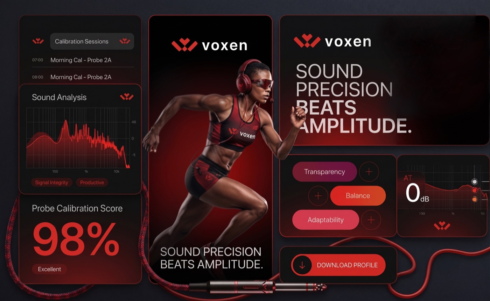
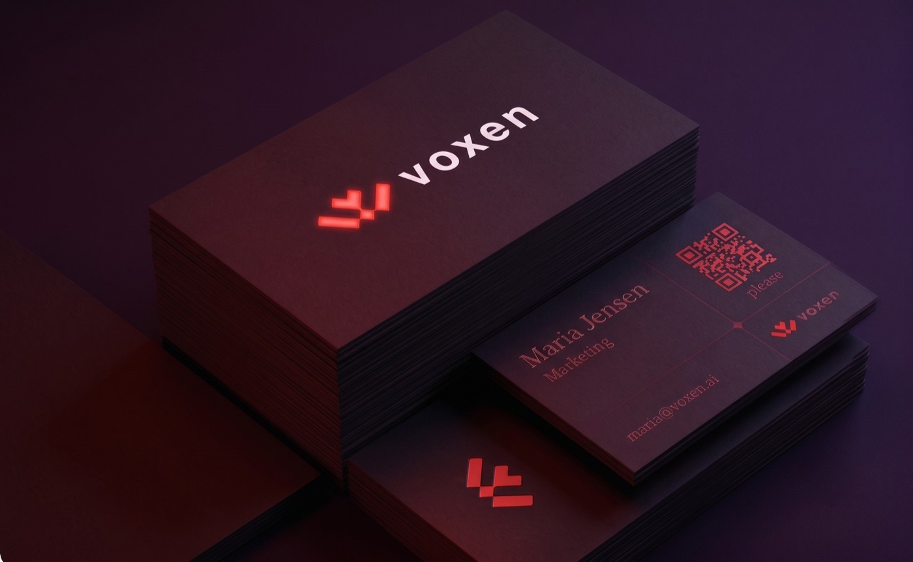
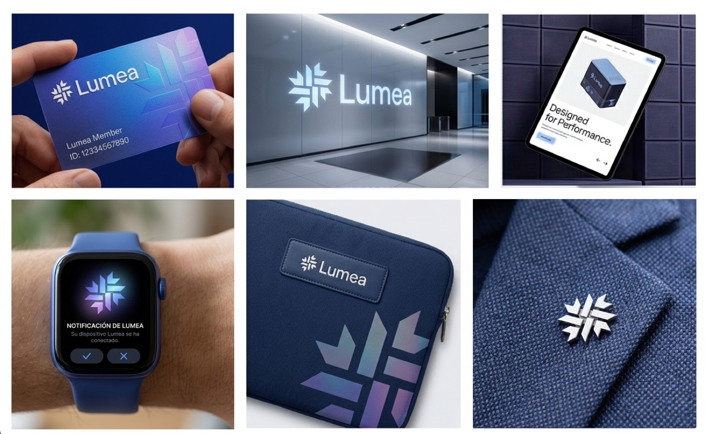
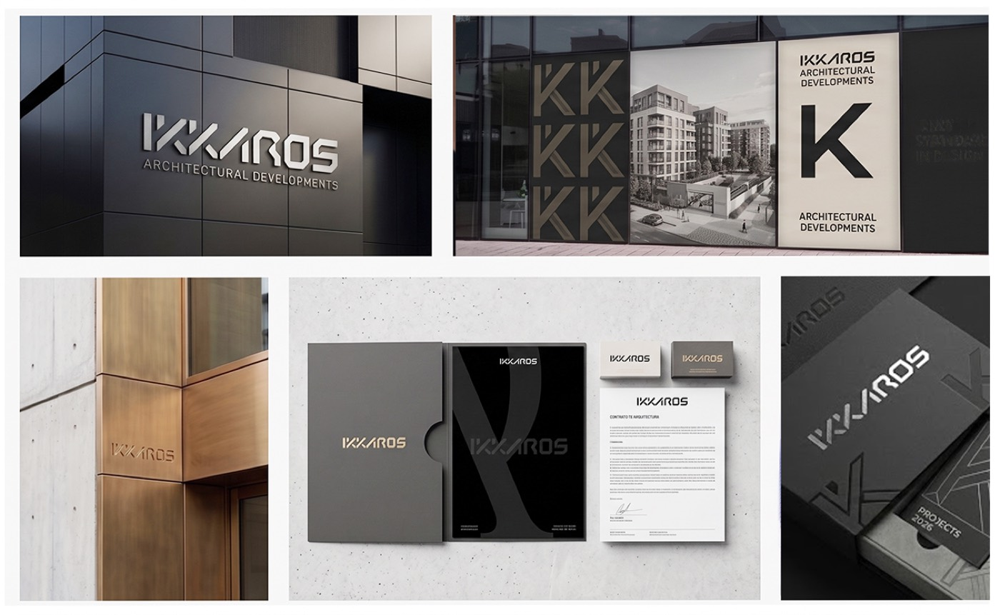
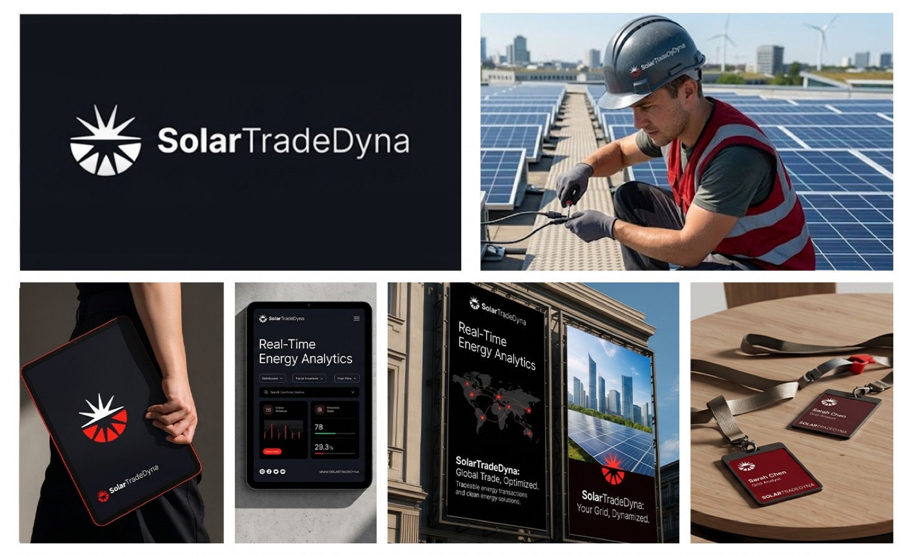

Norvell
Analítica digitalReto: un producto sólido con una marca que se veía genérica y fría. Resultado: una identidad monocromática que comunica confianza y precisión.
 Lab
Lab
Estrategia, concepto, logo y un sistema visual vivo en una URL que tu equipo abre, usa y actualiza. Aquí están las marcas que inventamos para entrenar el método y cómo lo llevamos a un evento.



Una marca de precisión sonora: rojo sobre negro, un símbolo geométrico y un sistema que va de la tarjeta a las redes.
Ninguna es un cliente. Son nuestro campo de práctica: cada una parte de un reto y termina en un sistema completo.
Reto: un producto sólido con una marca que se veía genérica y fría. Resultado: una identidad monocromática que comunica confianza y precisión.

Reto: piezas exquisitas con una marca sin carácter. Resultado: verde profundo y dorado, un wordmark con destello y un sistema de lujo cálido.

Reto: destacar en un mercado de estética fría y repetida. Resultado: un sistema luminoso, paleta cálida y aplicaciones del producto al digital.

Reto: una marca tan sólida como sus obras. Resultado: un wordmark arquitectónico en negro, bronce y concreto, de la señalética a la papelería.

Reto: solidez técnica con la energía optimista de la transición. Resultado: un símbolo solar dinámico, del panel al dashboard.

Reto: distinguirse en un mercado ruidoso. Resultado: un símbolo sonoro, un sistema oscuro y minimal, del producto al wearable.

Reto: confianza médica sin verse como un hospital más. Resultado: un sistema en violetas y navy con un símbolo dinámico.

Reto: pasar de cero a una marca con sitio. Resultado: marca y landing completa con IA.